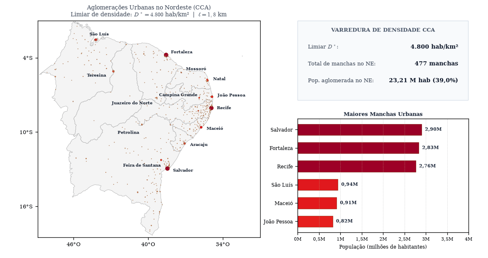
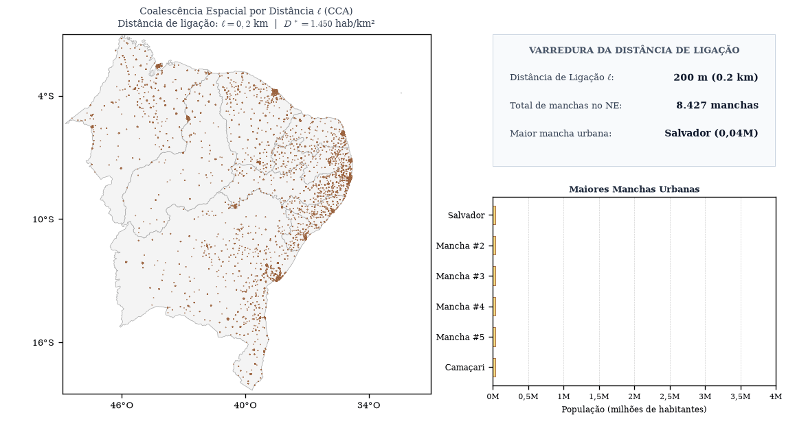
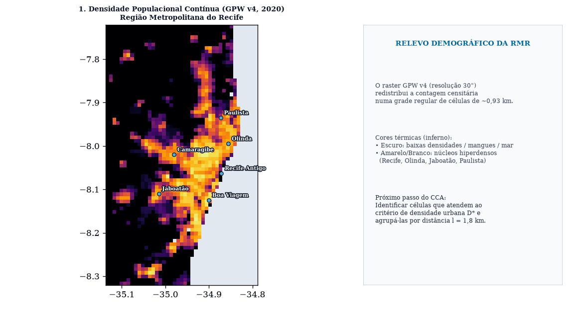
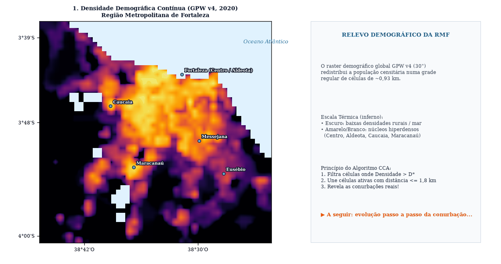
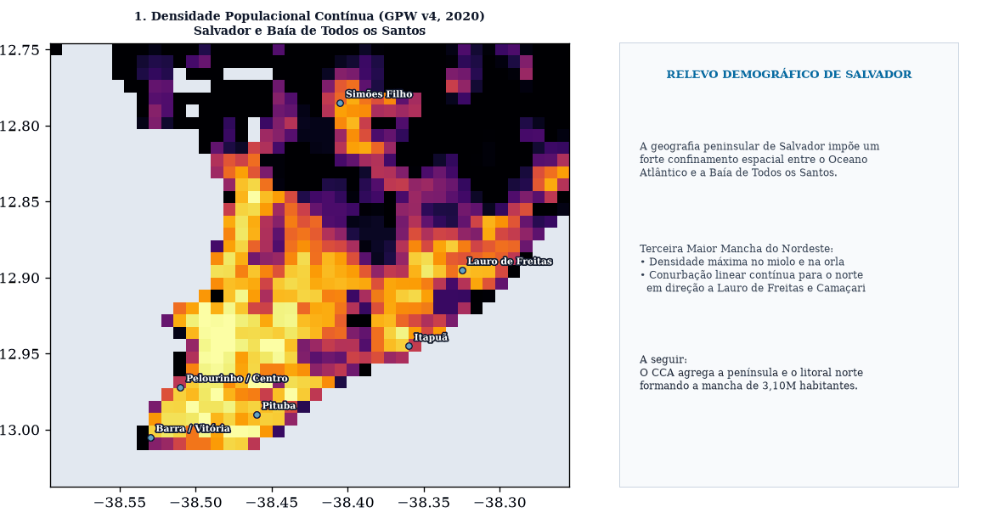

Demonstrações visuais do funcionamento do City Clustering Algorithm (CCA) aplicado ao raster GPW v4 (2020), evidenciando como a densidade $D^*$ e a distância de ligação $\ell$ moldam as 1.729 manchas urbanas da Imagem (a).

Demonstra como a variação de $D^*$ (de 4.800 hab/km² até 1.450 hab/km² e 900 hab/km²) faz emergir gradualmente os centros urbanos a partir de seus núcleos hiperdensos.

Com $D^* = 1.450$ hab/km² fixado, variar $\ell$ de 200 m até 3.500 m evidencia a transição de um sistema celular totalmente fragmentado para a consolidação metropolitana.

Visualização célula a célula no raster GPW v4 (30") mostrando a conurbação física de Recife, Olinda, Jaboatão dos Guararapes, Paulista e Camaragibe em uma única mancha urbana contígua.

Demonstra como o CCA integra o núcleo costeiro hiperdenso de Fortaleza com os corredores populacionais de Caucaia (a oeste) e Maracanaú (a sudoeste).

Demonstra como a geografia peninsular de Salvador restringe o crescimento ao eixo norte, onde o CCA funde Salvador com Lauro de Freitas ao longo da Estrada do Coco e orla atlântica.